A colour gamut is the set of colours available in a colour space or
device. Lab is a colour space defined by the International Commission on
Illumination (CIE), with lightness L and two chromatic coordinates a and
b. convertColor() maps sampled standard RGB (sRGB) colours
into Lab; stat_hull_3d() draws their convex hull, and every
hull vertex keeps the colour of its sample.
This example builds the hull from sampled colours and explains the limits of that approximation. Installation is covered in Get started.
rgb <- expand.grid(r = seq(0, 1, length.out = 9),
g = seq(0, 1, length.out = 9),
b = seq(0, 1, length.out = 9))
rgb <- rgb[apply(rgb == 0 | rgb == 1, 1, any), ]
lab <- grDevices::convertColor(as.matrix(rgb), from = "sRGB", to = "Lab", scale.in = 1)
gamut <- data.frame(a = lab[, 2], b = lab[, 3], L = lab[, 1],
hex = grDevices::rgb(rgb$r, rgb$g, rgb$b))
ggplot(gamut, aes(a, b, z = L)) +
stat_hull_3d(aes(fill = I(hex), group = 1), shading = "smooth", shade = FALSE) +
coord_3d(aspect = "data")
The samples lie on the surface of the RGB cube. The conversion to Lab is continuous and one-to-one, so the cube’s surface maps onto the boundary of the gamut, and samples from inside the cube could not become hull vertices.
fill = I(hex) passes each sample’s colour to its vertex
unchanged. A discrete fill would otherwise split the samples into one
group per colour, so group = 1 keeps them in one hull.
shading = "smooth" interpolates the corner colours across
each face in linear light, and shade = FALSE leaves them
unlit, so each vertex shows its sRGB colour exactly. The chunk option
raster3d = TRUE draws the hull into an image that evaluates
the interpolation per pixel, with axes and text kept as vector graphics.
The vector backend draws the same interpolation as one embedded image
clipped to the hull’s outline, since no gradient of R graphics follows
colours that vary in two directions across a face.
Between the vertices the faces show interpolated colours, not the colours of the Lab points they pass through, and the convex hull also covers Lab colours that lie outside the sRGB gamut where the gamut’s surface is concave. The picture therefore depends on the sampling density, the Lab conversion and the convex-hull approximation.